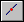

Tear-Off Sketch command bar
- Tear-Off Sketch Options
-
Displays the Tear-Off Sketch Options dialog box.
- Main Steps
-
- Plane Step
-
Defines a reference plane for the sketch to be copied or moved to. Plane creation and selection controls are added to the command bar when the plane step is active.
- Select From Sketch Step
-
Allows you to select sketches that you want to copy or move.
- Reposition Step
-
Allows you to reposition torn off sketches.
- Finish/Cancel
-
This button changes function as you move through the feature construction process. The Finish button constructs the feature. After previewing or finishing the feature, you can edit it by re-selecting the appropriate step on the command bar. The Cancel button discards all input and exits the command.
- Plane Step Options
-
- Create-From Options
-
Sets the method of defining the reference plane. Depending on the model you are constructing, some of the options listed may not be available.
-
Coincident Plane—Specifies that you want to define a plane that is coincident to an existing reference plane or a planar face on the part. When you set this option, a default X-axis and direction is applied to the new reference plane. You can use keyboard accelerators to define a different X-axis and direction for the new reference plane.
-
Parallel Plane—Specifies that you want to define a plane that is parallel to an existing reference plane or a planar face on the part. When you set this option, you can specify the parallel offset distance. When you set this option, a default X-axis and direction is applied to the new reference plane. You can use keyboard accelerators to define a different X-axis and direction for the new reference plane.
-
Angled Plane—Specifies that you want to define a plane that is at an angle to an existing reference plane or planar face on the part. When you set this option, you can specify the angle value you want.
-
Perpendicular Plane—Specifies that you want to define a plane that is perpendicular to an existing reference plane or planar face on the part.
-
Coincident Plane By Axis—Specifies that you want to define a plane that is coincident to an existing reference plane or a planar face on the part. When you set this option, you define the X-axis and direction for the new reference plane using a linear edge, a planar face, or another reference plane.
-
Plane Normal to Curve—Specifies that you want to define a plane that is perpendicular to a curve you select. This is the default option when constructing a helix using the Perpendicular option.
-
Plane By 3 Points—Specifies that you want to define a plane by three keypoints you select.
-
Feature's Plane—Specifies that you want to define a plane that is coincident to a reference plane used to define an earlier feature. You can select the feature you want using Feature PathFinder or in the graphic window. This option is not available when constructing the base feature.
-
Last Plane—Automatically selects the reference plane used for the previous feature. This option is not available if the last feature was a pattern or when constructing the base feature.
-
- Keypoints
-
Sets the type of keypoint you can select to define a feature extent or to position a new reference plane. This allows you to define the feature extent or the location of the reference plane using a keypoint on other existing geometry. The available keypoint options are specific to the command and workflow you use.

Allows you to select any keypoint.

Allows you to select an end point.

Allows you to select a midpoint.

Allows you to select the center point of a circle or arc.

Allows you to select a tangency point on an analytic curved face such as a cylinder, sphere, torus, or cone.

Allows you to select a silhouette point.

Allows you to select an edit point on a curve.
- Select From Sketch Step Options
-
- Select
-
Sets the method of selecting a sketch element.
-
Chain—Allows you to select a endpoint connected set of elements.
-
Single—Allows you to select a single element.
-
- Deselect (x)
-
Clears the selection.
- Accept (check mark)
-
Accepts the selection.
- Reposition Step Options
-
- Select
-
Sets the method of repositioning a sketch element.
-
Keypoint—Allows you to select a endpoint connected set of elements.
-
Pierce Points—Allows you to select a single element.
-
- Other command bar Options
-
- Name
-
Displays the feature name. Feature names are assigned automatically. You can edit the name by typing a new name in the box on the command bar or by selecting the feature and using the Rename command on the shortcut menu.
Look up more details
Sketch View commandSketch command
Closed Sketch Indicator command
Project to Sketch command
Project to Sketch command bar
Project to Sketch Options dialog box
Peer Edge Locate command
Silhouette Edge Locate command
Clean Sketch command
Clean Sketch command bar
Clean Sketch Options dialog box
Copy Sketch command
Copy Sketch command bar
Copy Sketch To Target dialog box
Activate Regions command
Merge with Coplanar Sketches command
Migrate Geometry and Dimensions command
Tear-Off Sketch command
Tear-Off Sketch Options dialog box